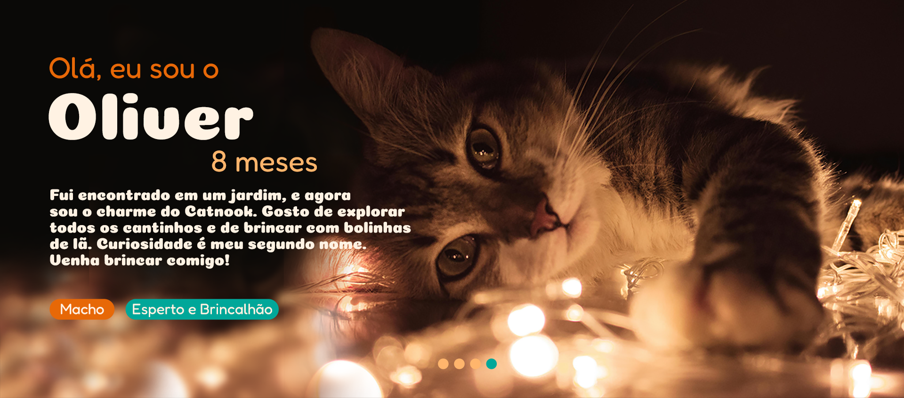
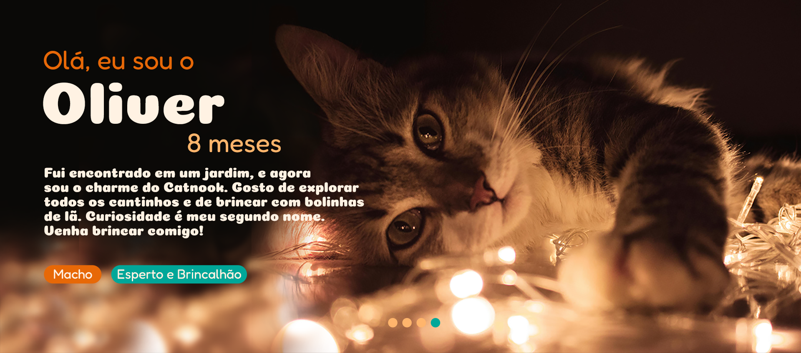

Aconchego
e sabor
em cada
canto.

Produtos
Iced Coffe
Desperte sua gatice com
nosso Iced Coffee! Perfeito
para dias quentes, esse café
gelado é uma explosão de
frescor e sabor.
Frappuccino
Nosso Frappuccino é um
verdadeiro miauuu de sabor!
Cremoso, gelado e irresistível,
é perfeito para dar aquele
toque de fofura ao seu dia.
Macarons
Delicie-se com nossos macarons!
coloridos e saborosos, leves
como uma patinha de gato!
Uma explosão de sabores em
cada mordida.
Pankecat
Nossas Pankecats são as
panquecas mais fofas da cidade!
Servidas com frutas frescas, mel
e açúcar, são uma verdadeira
festa para os gateiros gulosos.
Salmãoduba
Pura sofisticação felina!
Salmão fresco, requeijão cremoso,
ervas aromáticas e a maionese especial da casa. Um sanduíche
digno de um gato gourmet.
Scrambled Cat
Felinamente delicioso!
É um sanduíche de ovos mexidos
cremosos, cebolinha, queijo
e maionese, tudo em um pão
chapeado na manteiga de ervas.
Cheesecake
Delicie-se com nossa cheesecake,
tão suave e deliciosa quanto um ronronar. Uma fatia é suficiente para
fazer qualquer um
se sentir
no paraíso dos gatos!
Gatoccinno
Aqueça seu coração com um
Gatoccino! Espumoso, cremoso e
cheio de sabor, é o cappuccino que
vai fazer você se
sentir acariciado
a cada gole.

Gatálogo
 

 Quem somos?
Quem somos?

@catnookcafe

@catnookcafe


Contato
Endereço:
Rua dos Felinos, 123
Bairro Miautástico
Cidade dos Gatos, PA 45678-000
Telefone: (19) 1234-5678
E-mail: contato@catnookcafe.com